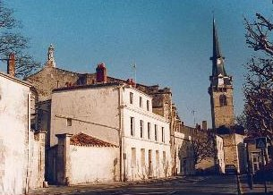
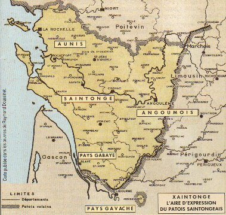
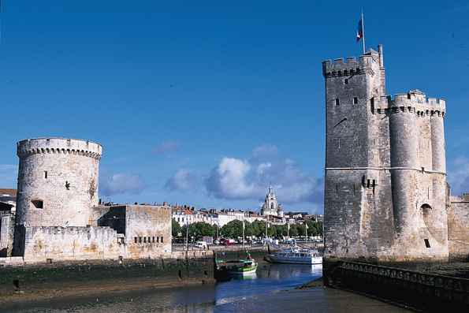

|

English


SIGNEZ
MON LIVRE D'OR
LIENS
| |
|

|
| L'Aunis, pays de Mathieu
Choret.
Mathieu Choret et Jeanne Serre
ont, au début des années 1620, un fils à qui ils donnent le même
prénom que son père: Mathieu.
Selon plusieurs sources web,
dont le Fichier
Origine, Mathieu est originaire de la paroisse
Notre-Dame-de-Cougnes à La Rochelle. Mais, les documents
sont souvent imprécis et même contradictoires sur les origines de nos
ancêtres. Donc, en attendant de voir l'acte de naissance, nous
pouvons au moins affirmer que Mathieu, s'il n'est pas né à La
Rochelle, s'y est du moins marié.
Cette paroisse est
la plus ancienne de la ville, datant du 12ème siècle. Les
églises de la ville, dont celle de Notre-Dame, ayant été détruites
en 1568 durant les guerres de religions, le baptême de Mathieu se
déroule donc probablement dans la chapelle Sainte-Marguerite,
lieu de culte des Rochelais pendant de nombreuses années. 
Chapelle
Sainte-Marguerite  Église Notre-Dame,
sa reconstruction débutera en 1653, donc après le
départ de Mathieu pour le Canada.
 La Rochelle est alors la capitale
de l'Aunis, une province de l'ancien Régime en France, en bordure de
l'Atlantique, entre le Poitou et la Saintonge. C'est
une ville fortifiée par Vauban qui comprend cinq paroisses. La Rochelle est alors la capitale
de l'Aunis, une province de l'ancien Régime en France, en bordure de
l'Atlantique, entre le Poitou et la Saintonge. C'est
une ville fortifiée par Vauban qui comprend cinq paroisses.
Limité par les Marais Poitevin et
charentais, l'Aunis est constitué d'un plateau calcaire formant des
falaises en certaines parties du littoral (face à l'île de Ré, par
exemple). Plus petite province de France, l'Aunis est un plat pays
bien particulier, se distinguant fortement des provinces voisines,
surtout par son histoire rurale et le rôle éminent de La
Rochelle.

|
|
L'histoire de L'Aunis et de La
Rochelle
 |
|
Quelques vestiges attestent d'une
implantation humaine ancienne, les vestiges trouvés à date remontent
au Néolithique. Tout au cours de son histoire, cette province est
un enjeu de rivalités entre les nations et les princes. C'est
sous l'égide des ducs d'Aquitaine que La Rochelle devient la capitale
de l'Aunis. Devenue possession anglaise par le mariage d'Aliénor
d'Aquitaine avec le roi d'Angleterre en 1152, la ville se range du
côté de Jean sans Terre ( rappelez-vous l'époque de Robin
des Bois: il est fidèle au roi Richard Coeur de Lion qui est parti en
croisade, et bien Jean sans Terre est son frère qui veut s'emparer de
la couronne) dans le conflit qui l'oppose à la couronne de
France. Après le premier siège de La Rochelle, l'Aunis passe
sous le contrôle des rois de France.
Mais dans la seconde moitié du 16ème
siècle, elle choisit le camp protestant et l'alliance avec
l'Angleterre. En 1551-1552 La Rochelle se révolte contre
François 1er lors de l'extension des gabelles (une sorte de
taxe). Ravagé par les guerres de religion, La Rochelle fait
figure de capitale des protestants.
 À partir de 1620, Louis XIII, par
l'entremise de son ministre Richelieu, mène une lutte acharnée contre
les protestants, mais ce n'est qu'en 1627 qu'il s'attaque à la ville de
La Rochelle. À partir de 1620, Louis XIII, par
l'entremise de son ministre Richelieu, mène une lutte acharnée contre
les protestants, mais ce n'est qu'en 1627 qu'il s'attaque à la ville de
La Rochelle.
La ville assiégée
n'hésite pas à demander secours
à l'Angleterre qui utilise ce prétexte pour lancer l'assaut contre la
France et détruire la flotte navale qu'elle construisait. La
guerre est déclarée. L'Angleterre saisit aussi cette occasion
pour lancer les frères
Kirk à l'assaut des postes de traite de la Nouvelle-France,
espérant ainsi s'enrichir avec le commerce des fourrures.
Les affrontements entre catholiques et
protestants sont d'une rare violence, malgré l'édit de Nantes signé
en 1598. Le siège de La Rochelle dure quinze mois. La
ville résiste de façon héroïque mais doit capituler en 1628 après
que quinze mille de ses vingt mille habitants eurent trouvé la mort par
les armes ou suite à la famine.
Mathieu
Choret n'est qu'un jeune enfant durant ces évènements, et il est
catholique. S'il réside à La Rochelle, ou dans les environs, à l'époque du siège
commandé par Richelieu, comment lui et sa famille ont-t-ils vécu tout
cela? Question sans réponse. Mais, chose certaine, c'est une période difficile pour
les habitants de l'Aunis. Pour
avoir une idée de l'époque, des mœurs, des costumes,...
référez-vous aux nombreux films français tournés sur les Mousquetaires.
C'est tout à fait leur époque et, dans le roman d'Alexandre
Dumas, il me semble me rappeler qu'ils participent au siège de La
Rochelle. |
|

LA
ROCHELLE Ces
tours ont vu partir Mathieu vers le Canada. |
|
L'entrée du Vieux Port est encadrée par
deux tours du XIV ième siècle; à gauche la tour de la Chaîne,
bâtie vers 1375, ainsi nommée à cause de la chaîne que l'on scellait
pour fermer le port durant la nuit; à droite la tour Saint-Nicolas,
bâtie entre 1350 et 1384, qui constituait à elle seule une puissante
forteresse; l'ouvrage a la forme d'un pentagone dont quatre angles sont
flanqués de tours engagées et le cinquième d'un donjon carré.

Franchissant la porte des Dames, au pied de
la tour de la Chaîne, on trouve à droite, un escalier montant à la rue
Sur les Murs, établie sur un fragment des remparts du Moyen-âge.
Elle aboutit à la tour de la Lanterne (1445-1476), magnifique
donjon cylindrique surmonté d'une haute flèche octogonale et flanqué
d'une tourelle d'escalier portant une lanterne qui servait autrefois de
phare.
La tour de la Lanterne, dernier
phare pour les passagers quittant la rade pour la grande traversée.
De la tour de la Lanterne, en continuant de suivre le pied du rempart,
puis en franchissant l'enceinte fortifiée de Vauban par la porte des
Deux Moulins, on arrive à la plage de la Concurrence, peu étendue,
mais encadrée de belles promenades ombragées.

La tour de la Chaîne au premier plan, et celle de la
Lanterne au loin.
L'hôtel de ville, le monument le
plus remarquable de La Rochelle, a été construit pour une part sous
François Ier, vers 1544, et pour l'autre sous Henri VI, entre 1595 et
1607. Il est précédé d'un mur d'enceinte du 15ième siècle, à créneaux
et mâchicoulis, qui relie deux petits beffrois. Dans la cour, la façade
est une oeuvre somptueuse, très caractéristique de la Renaissance
saintongeaise, avec une originale galerie ouverte au rez-de-chaussée.
Elle est flanquée à gauche d'un pavillon du temps de Henri II.
|
|

L'écu de la province de l'Aunis est de
gueules à la perdrix couronnée d'or.
L'origine de ce blason est
inconnu.
|
|